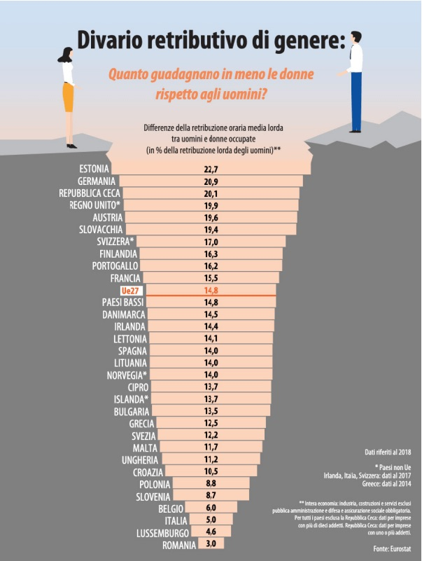

3. All'inizio si può notare che l'illustrazione è di simile concetto a quella precedente, ma si può
anche approfonditamente analizzare il fatto che i due individuali si stanno appena voltando le spalle
l'uno all'altro.

4. La quarta immagine è molto diversa dalle altre, questa è un'infografica. L'unica cosa che entrambe
le illustrazioni condividono è il concetto ed il messaggio. Si può vedere un cratere aperto
(senso metaforico del 'Gender Pay Gap') e tutti i paesi che aprono ulteriormente lo spazio per impedire l'unione.